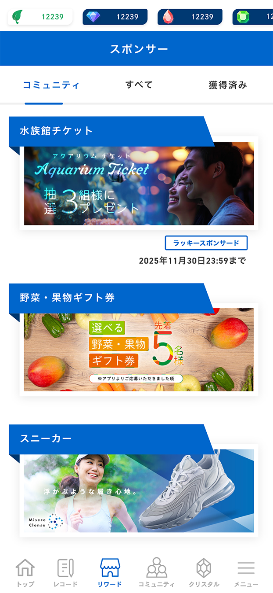

Before
After

SPOBY リワード一覧画面
制作背景・意図
- 【概要】
-
- 制作物種別 : 採用サイト（Webサイト）
- 対象ページ : 募集職種ページ
- サイト内容 : 募集職種一覧/職種詳細情報/応募フォーム
- アプリ（SPOBY）について :
「SPOBY」は人の活動による脱炭素・健康増進を実現するアプリです。ユーザーはアプリを利用して活動を行うことでポイントを獲得でき、貯まったポイントはアプリ内に掲載されている様々なリワードと頑張ったご褒美として交換・獲得することができます。
- 【制作目的】
-
- なぜその職種を募集しているのかが正しく伝わるよう、事業内容や募集背景を整理し、情報として明確に提示しています。さらに、職種ごとに具体的な業務内容や役割を記載することで、応募前の理解を深め、入社後のミスマッチを防ぐことを狙いとしています。
- 【制作時に重視したポイント】
-
- 閲覧中のどのタイミングからでも応募行動に移れるよう、画面右下に常時表示される「応募はこちら」ボタンを配置し、応募フォームへの導線を明確に設計しました。また、各職種ページには実際に該当職種で働く現場社員の写真を使用し、業務内容だけでなく、働く環境や雰囲気が具体的にイメージできるよう配慮しています。加えて、情報量が多くなりがちな採用ページにおいても視認性を損なわないよう、装飾を抑えたシンプルなUIとし、ブランドカラーである青を基調に情報を整理しました。
- 【デザイン上の工夫点】
-
- 募集職種が複数並ぶ一覧画面ではカード型のレイアウトを採用することで、情報のまとまりを保ちつつ、視線の流れが途切れない構成としています。また、スマートフォンでの閲覧を前提に余白を広めに取り、文字サイズやボタンサイズを調整することで、可読性とタップ操作のしやすさを確保しました。CTAボタンについては、背景から十分なコントラストを取った配色とし、スクロール中でも視認しやすい位置に配置することで、行動につながりやすいデザインとしています。